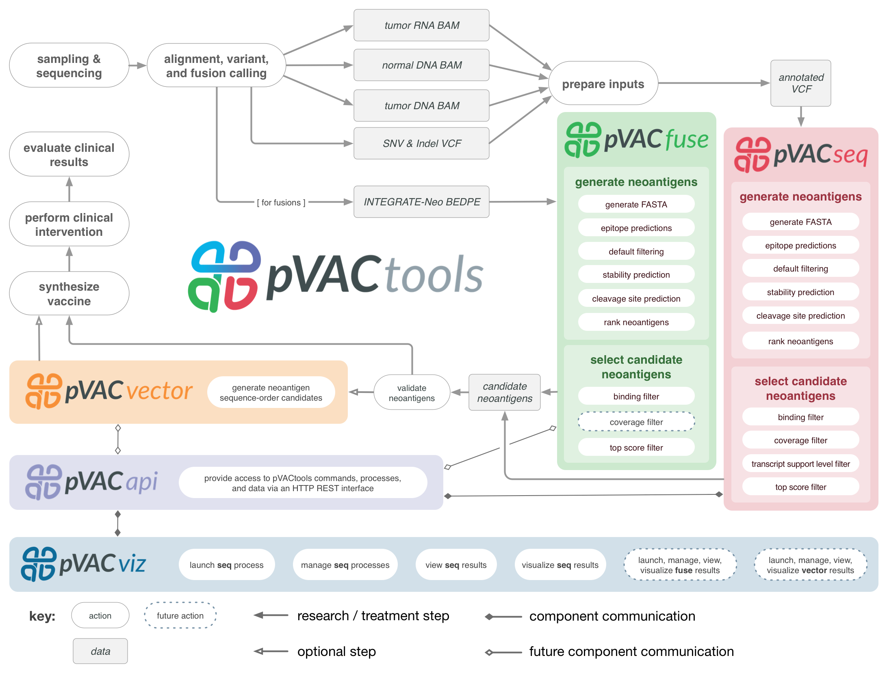

0）肿瘤免疫治疗套装之pVACtools
personalized Variant Antigens by Cancer Sequencing (pVAC-Seq)
pvactool 使用步骤如下：
1）安装pvactools：ip install pvactools[API]，更新 pip install pvactools[API] --upgrade
pip install pvactools
pip install pvactools --upgrade
dockers版本：griffithlab/pvactools on DockerHub （includes installations of the IEDB class I and class II tools at /opt/iedb）
2）Installing IEDB binding prediction tools (strongly recommended）
Note: Using a local IEDB install with pVACtools requires conda.
pVACtools is written in python 3 and IEDB is only compatible with python 2.7. Because of this version mismatch, the pVACtools modules will create a custom python 2.7 environment and execute IEDB inside of it. This requires conda.
本地安装目录：/mnt/X500/farmers/linhx/bin/software/pvactools/iedb/
3）Installing MHCflurry （If you wish to run the MHCflurry prediction algorithm）
3.1）pip install mhcflurry （python 3 conda environment as the pvactools package.）
3.2）mhcflurry-downloads fetch （check that the mhcflurry package：mhcflurry-predict -h）
3.3）pip install tensorflow==1.5.0
4）Installing MHCnuggets （If you wish to run the MHCnuggets prediction algorithm）
4.1）pip install mhcnuggets （python 3 conda environment as the pvactools package.）
4.2 ) check that the mhcnuggets package：pip show mhcnuggets
4.3）pip install tensorflow==1.5.0
1）pVACseq: A cancer immunotherapy pipeline for identifying and prioritizing neoantigens from a list of tumor mutations.（体细胞变异识别抗原）
2）pVACfuse: A tool for detecting neoantigens resulting from gene fusions。（gene融合检测抗原）
3）pVACvector：A tool designed to aid specifically in the construction of DNA vectorxinxi-based cancer vaccines.（ 帮助构建基于DNA载体：癌症疫苗）
4）pVACviz： A browser-based user interface that assists users in launching, managing, reviewing, and visualizing the results of pVACtools processes. pVACviz relies on the pVACapi and a client application. The source code for the client application can be found here. （结果可视化）
5）pVACapi： The pVACapi provides a HTTP REST interface to the pVACtools suite.
